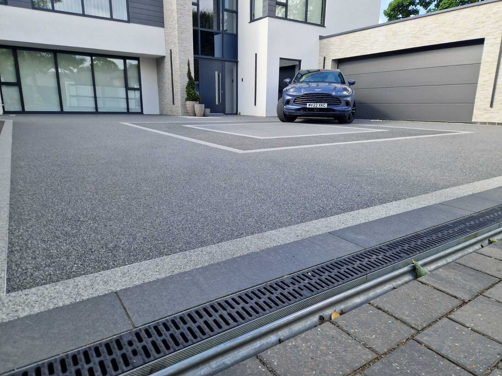
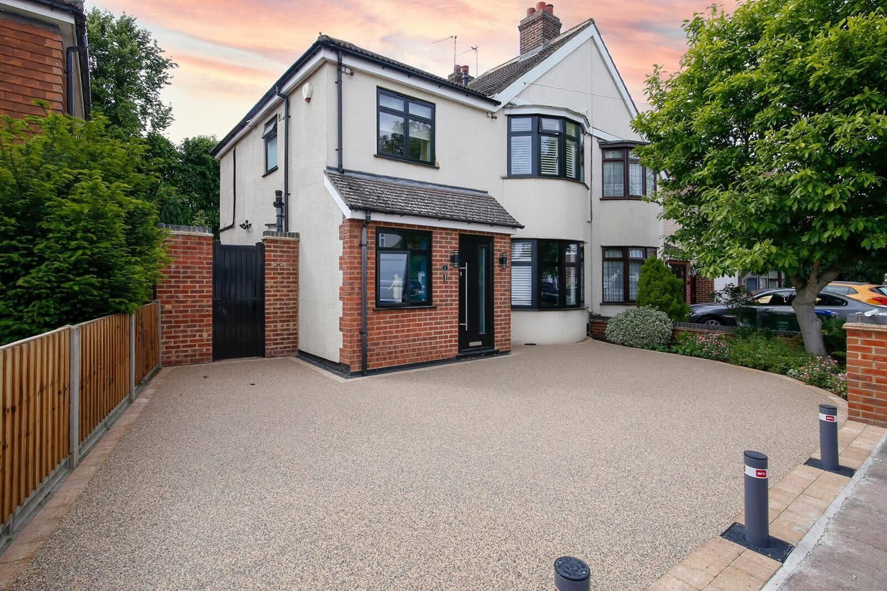

Want to see border options for your project?
Get a fixed quote, free — no obligations.
We’ll show you border and finish options as part of your free visualisation. No pressure, just inspiration.

Design Details • Cheshire & North Wales
★★★★★ 5/5 on Google · Approved Vuba Installer · 100+ colour blends
Borders & Finishes
A well-chosen border transforms a good resin driveway into a great one. We offer a range of decorative border options — from coloured resin contrast borders to traditional brick edging and natural stone detailing — all designed to frame your surface and add kerb appeal.
Use a contrasting aggregate blend to create a defined border within the resin surface itself. A darker or lighter edge adds depth and definition to any driveway or patio.
Traditional brick borders give a classic, defined edge. We lay brick borders in a range of colours and patterns to complement your resin finish and property style.
For a premium look, we can install natural stone edging such as granite, sandstone or limestone to create an elegant border that complements your home’s architecture.
Clean, minimal aluminium edging keeps the resin surface perfectly contained and creates a sharp, modern finish line between your driveway and lawn or flower beds.
Combine two or more aggregate blends in one driveway to create zoned areas, feature panels or flowing patterns. We help you visualise the layout before we start.
Not sure which border works best? We create a free visualisation mock-up so you can see your chosen borders and finishes on your actual property before committing.
Real Installations
All surfaces shown are genuine resin bound installations — the Vuba colours and finishes we bring to every job across Cheshire.





Client Feedback
★★★★★
I had my driveway done after seeing them complete the British Legion project in Penyffordd. I couldn’t fault them or recommend them enough — it looks amazing!
— Laura Halstead
★★★★★
They upgraded our back garden, front driveway and pathways. The resin quality is brilliant and drains perfectly — no surface water whatsoever. The team were hard working, on time and polite throughout. Can’t recommend them enough!
— Richard Hughes
★★★★★
Fantastic job from start to finish. They helped us choose the right colours, communication was excellent, and they went above and beyond. The driveway looks incredible and really makes a difference to our house.
— Kimberley Ravazzolo
Common Questions
Coloured resin contrast borders are often included within the overall quote. Brick or natural stone edging carries a small additional cost depending on the material. We always confirm pricing during your free survey so there are no surprises.
We typically lay contrast borders at 150–300mm wide, but we can adapt to any width you prefer. We create a visual mock-up during your free consultation so you can see exactly how the finished border will look.
Absolutely. With 100+ Vuba colour blends available, you can mix and match any aggregate combination for your border and main field. Most customers choose a complementary tone — a darker border with a lighter interior, or a natural stone border to frame a contemporary aggregate.
Yes. A defined resin or masonry border also acts as a containment edge for the aggregate, helping maintain sharp, clean lines over time. It’s both decorative and structural.
In most cases yes. Send us a photo or bring a sample and we’ll match as closely as possible from the Vuba range. We can arrange colour samples before you commit to a final choice.
Want to see border options for your project?
We’ll show you border and finish options as part of your free visualisation. No pressure, just inspiration.